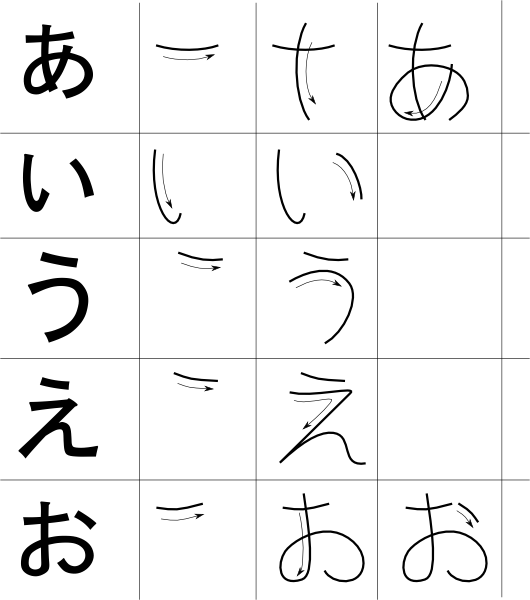
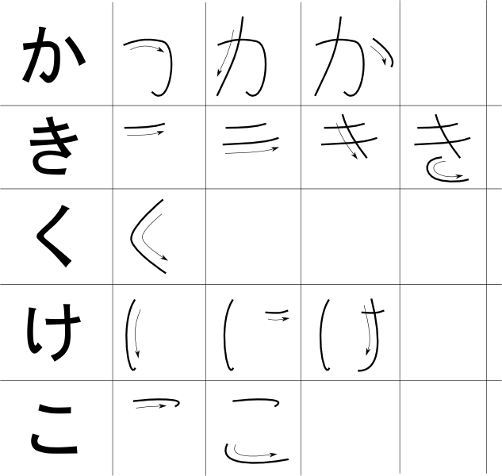
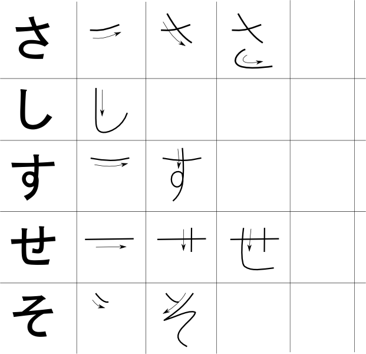

Here are some diagrams showing the stroke order for some hiragana characters. Image licenses:Creative Commons License and Attribution-Share Alike 2.5 Generic Images found here: visit wikimedia.org



hiragana vowels stroke order
stroke order for k-syllables
stroke order for s-syllables